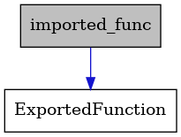

exportedfunction.h
Include dependency graph for exportedfunction.h:
![digraph {
graph [bgcolor="#00000000"]
node [shape=rectangle style=filled fillcolor="#FFFFFF" font=Helvetica padding=2]
edge [color="#1414CE"]
"3" [label="stdbool.h" tooltip="stdbool.h"]
"18" [label="stdatomic.h" tooltip="stdatomic.h"]
"16" [label="linkedlist.h" tooltip="linkedlist.h"]
"4" [label="stdint.h" tooltip="stdint.h"]
"6" [label="stdlib.h" tooltip="stdlib.h"]
"1" [label="/home/runner/work/AtomVM/AtomVM/src/libAtomVM/exportedfunction.h" tooltip="/home/runner/work/AtomVM/AtomVM/src/libAtomVM/exportedfunction.h" fillcolor="#BFBFBF"]
"12" [label="utils.h" tooltip="utils.h"]
"9" [label="term_typedef.h" tooltip="term_typedef.h"]
"13" [label="stddef.h" tooltip="stddef.h"]
"10" [label="limits.h" tooltip="limits.h"]
"14" [label="refc_binary.h" tooltip="refc_binary.h"]
"7" [label="string.h" tooltip="string.h"]
"2" [label="term.h" tooltip="term.h"]
"17" [label="smp.h" tooltip="smp.h"]
"8" [label="memory.h" tooltip="memory.h"]
"5" [label="stdio.h" tooltip="stdio.h"]
"15" [label="list.h" tooltip="list.h"]
"11" [label="inttypes.h" tooltip="inttypes.h"]
"16" -> "6" [dir=forward tooltip="include"]
"1" -> "2" [dir=forward tooltip="include"]
"12" -> "13" [dir=forward tooltip="include"]
"9" -> "10" [dir=forward tooltip="include"]
"9" -> "11" [dir=forward tooltip="include"]
"9" -> "4" [dir=forward tooltip="include"]
"14" -> "3" [dir=forward tooltip="include"]
"14" -> "6" [dir=forward tooltip="include"]
"14" -> "15" [dir=forward tooltip="include"]
"14" -> "17" [dir=forward tooltip="include"]
"2" -> "3" [dir=forward tooltip="include"]
"2" -> "4" [dir=forward tooltip="include"]
"2" -> "5" [dir=forward tooltip="include"]
"2" -> "6" [dir=forward tooltip="include"]
"2" -> "7" [dir=forward tooltip="include"]
"2" -> "8" [dir=forward tooltip="include"]
"2" -> "14" [dir=forward tooltip="include"]
"2" -> "12" [dir=forward tooltip="include"]
"2" -> "9" [dir=forward tooltip="include"]
"17" -> "3" [dir=forward tooltip="include"]
"17" -> "18" [dir=forward tooltip="include"]
"8" -> "9" [dir=forward tooltip="include"]
"8" -> "12" [dir=forward tooltip="include"]
"8" -> "4" [dir=forward tooltip="include"]
"15" -> "16" [dir=forward tooltip="include"]
}](../../../_images/graphviz-1a66d7a53511596e18b7e4c3220e5592ab4be5d9.png)
This graph shows which files directly or indirectly include exportedfunction.h:
![digraph {
graph [bgcolor="#00000000"]
node [shape=rectangle style=filled fillcolor="#FFFFFF" font=Helvetica padding=2]
edge [color="#1414CE"]
"3" [label="/home/runner/work/AtomVM/AtomVM/src/libAtomVM/bif.c" tooltip="/home/runner/work/AtomVM/AtomVM/src/libAtomVM/bif.c"]
"2" [label="/home/runner/work/AtomVM/AtomVM/src/libAtomVM/bif.h" tooltip="/home/runner/work/AtomVM/AtomVM/src/libAtomVM/bif.h"]
"9" [label="/home/runner/work/AtomVM/AtomVM/src/libAtomVM/platform_nifs.h" tooltip="/home/runner/work/AtomVM/AtomVM/src/libAtomVM/platform_nifs.h"]
"14" [label="/home/runner/work/AtomVM/AtomVM/src/libAtomVM/scheduler.c" tooltip="/home/runner/work/AtomVM/AtomVM/src/libAtomVM/scheduler.c"]
"1" [label="/home/runner/work/AtomVM/AtomVM/src/libAtomVM/exportedfunction.h" tooltip="/home/runner/work/AtomVM/AtomVM/src/libAtomVM/exportedfunction.h" fillcolor="#BFBFBF"]
"7" [label="/home/runner/work/AtomVM/AtomVM/src/libAtomVM/context.c" tooltip="/home/runner/work/AtomVM/AtomVM/src/libAtomVM/context.c"]
"11" [label="/home/runner/work/AtomVM/AtomVM/src/libAtomVM/stacktrace.c" tooltip="/home/runner/work/AtomVM/AtomVM/src/libAtomVM/stacktrace.c"]
"10" [label="/home/runner/work/AtomVM/AtomVM/src/libAtomVM/stacktrace.h" tooltip="/home/runner/work/AtomVM/AtomVM/src/libAtomVM/stacktrace.h"]
"4" [label="/home/runner/work/AtomVM/AtomVM/src/libAtomVM/module.c" tooltip="/home/runner/work/AtomVM/AtomVM/src/libAtomVM/module.c"]
"8" [label="/home/runner/work/AtomVM/AtomVM/src/libAtomVM/module.h" tooltip="/home/runner/work/AtomVM/AtomVM/src/libAtomVM/module.h"]
"12" [label="/home/runner/work/AtomVM/AtomVM/src/libAtomVM/sys.h" tooltip="/home/runner/work/AtomVM/AtomVM/src/libAtomVM/sys.h"]
"5" [label="/home/runner/work/AtomVM/AtomVM/src/libAtomVM/nifs.c" tooltip="/home/runner/work/AtomVM/AtomVM/src/libAtomVM/nifs.c"]
"15" [label="/home/runner/work/AtomVM/AtomVM/src/libAtomVM/nifs.h" tooltip="/home/runner/work/AtomVM/AtomVM/src/libAtomVM/nifs.h"]
"6" [label="/home/runner/work/AtomVM/AtomVM/src/libAtomVM/opcodesswitch.h" tooltip="/home/runner/work/AtomVM/AtomVM/src/libAtomVM/opcodesswitch.h"]
"13" [label="/home/runner/work/AtomVM/AtomVM/src/libAtomVM/globalcontext.c" tooltip="/home/runner/work/AtomVM/AtomVM/src/libAtomVM/globalcontext.c"]
"2" -> "3" [dir=back tooltip="include"]
"2" -> "4" [dir=back tooltip="include"]
"2" -> "5" [dir=back tooltip="include"]
"2" -> "6" [dir=back tooltip="include"]
"9" -> "5" [dir=back tooltip="include"]
"1" -> "2" [dir=back tooltip="include"]
"1" -> "8" [dir=back tooltip="include"]
"1" -> "15" [dir=back tooltip="include"]
"1" -> "6" [dir=back tooltip="include"]
"1" -> "9" [dir=back tooltip="include"]
"10" -> "6" [dir=back tooltip="include"]
"10" -> "11" [dir=back tooltip="include"]
"8" -> "2" [dir=back tooltip="include"]
"8" -> "4" [dir=back tooltip="include"]
"8" -> "5" [dir=back tooltip="include"]
"8" -> "6" [dir=back tooltip="include"]
"8" -> "9" [dir=back tooltip="include"]
"8" -> "10" [dir=back tooltip="include"]
"8" -> "12" [dir=back tooltip="include"]
"12" -> "7" [dir=back tooltip="include"]
"12" -> "13" [dir=back tooltip="include"]
"12" -> "4" [dir=back tooltip="include"]
"12" -> "5" [dir=back tooltip="include"]
"12" -> "14" [dir=back tooltip="include"]
"15" -> "4" [dir=back tooltip="include"]
"15" -> "5" [dir=back tooltip="include"]
"15" -> "6" [dir=back tooltip="include"]
"6" -> "7" [dir=back tooltip="include"]
"6" -> "4" [dir=back tooltip="include"]
}](../../../_images/graphviz-4662d1f7c50d6e725240519512d697aa82a66c4a.png)
Defines
-
TYPEDEF_MODULE
-
EXPORTED_FUNCTION_TO_NIF(func)
-
EXPORTED_FUNCTION_TO_UNRESOLVED_FUNCTION_CALL(func)
-
EXPORTED_FUNCTION_TO_MODULE_FUNCTION(func)
Typedefs
Enums
-
enum FunctionType
Values:
-
enumerator InvalidFunctionType
-
enumerator NIFFunctionType
-
enumerator UnresolvedFunctionCall
-
enumerator ModuleFunction
-
enumerator InvalidFunctionType
-
struct ExportedFunction
Public Members
-
enum FunctionType type
-
enum FunctionType type
-
struct Nif
Collaboration diagram for Nif:
![digraph {
graph [bgcolor="#00000000"]
node [shape=rectangle style=filled fillcolor="#FFFFFF" font=Helvetica padding=2]
edge [color="#1414CE"]
"18" [label="SpinLock" tooltip="SpinLock"]
"8" [label="Module" tooltip="Module"]
"7" [label="ListHead" tooltip="ListHead"]
"20" [label="HeapFragment" tooltip="HeapFragment"]
"12" [label="GlobalContext" tooltip="GlobalContext"]
"10" [label="ModuleFilename" tooltip="ModuleFilename"]
"17" [label="TimerList" tooltip="TimerList"]
"11" [label="LiteralEntry" tooltip="LiteralEntry"]
"5" [label="MailboxMessage" tooltip="MailboxMessage"]
"19" [label="Heap" tooltip="Heap"]
"1" [label="Nif" tooltip="Nif" fillcolor="#BFBFBF"]
"3" [label="Context" tooltip="Context"]
"16" [label="AtomsHashTable" tooltip="AtomsHashTable"]
"9" [label="imported_func" tooltip="imported_func"]
"13" [label="ValuesHashTable" tooltip="ValuesHashTable"]
"4" [label="Mailbox" tooltip="Mailbox"]
"2" [label="ExportedFunction" tooltip="ExportedFunction"]
"6" [label="TimerListItem" tooltip="TimerListItem"]
"15" [label="SyncList" tooltip="SyncList"]
"14" [label="HNode" tooltip="HNode"]
"8" -> "9" [dir=forward tooltip="usage"]
"8" -> "10" [dir=forward tooltip="usage"]
"8" -> "11" [dir=forward tooltip="usage"]
"8" -> "12" [dir=forward tooltip="usage"]
"8" -> "7" [dir=forward tooltip="usage"]
"7" -> "7" [dir=forward tooltip="usage"]
"20" -> "20" [dir=forward tooltip="usage"]
"12" -> "13" [dir=forward tooltip="usage"]
"12" -> "15" [dir=forward tooltip="usage"]
"12" -> "8" [dir=forward tooltip="usage"]
"12" -> "16" [dir=forward tooltip="usage"]
"12" -> "17" [dir=forward tooltip="usage"]
"12" -> "18" [dir=forward tooltip="usage"]
"12" -> "7" [dir=forward tooltip="usage"]
"17" -> "7" [dir=forward tooltip="usage"]
"5" -> "5" [dir=forward tooltip="usage"]
"19" -> "20" [dir=forward tooltip="usage"]
"1" -> "2" [dir=forward tooltip="usage"]
"1" -> "3" [dir=forward tooltip="usage"]
"3" -> "3" [dir=forward tooltip="usage"]
"3" -> "4" [dir=forward tooltip="usage"]
"3" -> "6" [dir=forward tooltip="usage"]
"3" -> "8" [dir=forward tooltip="usage"]
"3" -> "19" [dir=forward tooltip="usage"]
"3" -> "12" [dir=forward tooltip="usage"]
"3" -> "7" [dir=forward tooltip="usage"]
"16" -> "14" [dir=forward tooltip="usage"]
"9" -> "2" [dir=forward tooltip="usage"]
"13" -> "14" [dir=forward tooltip="usage"]
"4" -> "5" [dir=forward tooltip="usage"]
"6" -> "7" [dir=forward tooltip="usage"]
"15" -> "7" [dir=forward tooltip="usage"]
"14" -> "14" [dir=forward tooltip="usage"]
}](../../../_images/graphviz-b12003dcf7aa7b37df98ba87fdfd94a25acccaa8.png)
-
struct UnresolvedFunctionCall
Collaboration diagram for UnresolvedFunctionCall:
![digraph {
graph [bgcolor="#00000000"]
node [shape=rectangle style=filled fillcolor="#FFFFFF" font=Helvetica padding=2]
edge [color="#1414CE"]
"1" [label="UnresolvedFunctionCall" tooltip="UnresolvedFunctionCall" fillcolor="#BFBFBF"]
"2" [label="ExportedFunction" tooltip="ExportedFunction"]
"1" -> "2" [dir=forward tooltip="usage"]
}](../../../_images/graphviz-49dcb72e3610718b4dbd2b55ba24ae40b0e6e706.png)
Public Members
-
struct ExportedFunction base
-
int module_atom_index
-
int function_atom_index
-
int arity
-
struct ExportedFunction base
-
struct ModuleFunction
Collaboration diagram for ModuleFunction:
![digraph {
graph [bgcolor="#00000000"]
node [shape=rectangle style=filled fillcolor="#FFFFFF" font=Helvetica padding=2]
edge [color="#1414CE"]
"14" [label="SpinLock" tooltip="SpinLock"]
"3" [label="Module" tooltip="Module"]
"1" [label="ModuleFunction" tooltip="ModuleFunction" fillcolor="#BFBFBF"]
"11" [label="ListHead" tooltip="ListHead"]
"7" [label="GlobalContext" tooltip="GlobalContext"]
"5" [label="ModuleFilename" tooltip="ModuleFilename"]
"13" [label="TimerList" tooltip="TimerList"]
"6" [label="LiteralEntry" tooltip="LiteralEntry"]
"12" [label="AtomsHashTable" tooltip="AtomsHashTable"]
"4" [label="imported_func" tooltip="imported_func"]
"8" [label="ValuesHashTable" tooltip="ValuesHashTable"]
"2" [label="ExportedFunction" tooltip="ExportedFunction"]
"10" [label="SyncList" tooltip="SyncList"]
"9" [label="HNode" tooltip="HNode"]
"3" -> "4" [dir=forward tooltip="usage"]
"3" -> "5" [dir=forward tooltip="usage"]
"3" -> "6" [dir=forward tooltip="usage"]
"3" -> "7" [dir=forward tooltip="usage"]
"3" -> "11" [dir=forward tooltip="usage"]
"1" -> "2" [dir=forward tooltip="usage"]
"1" -> "3" [dir=forward tooltip="usage"]
"11" -> "11" [dir=forward tooltip="usage"]
"7" -> "8" [dir=forward tooltip="usage"]
"7" -> "10" [dir=forward tooltip="usage"]
"7" -> "3" [dir=forward tooltip="usage"]
"7" -> "12" [dir=forward tooltip="usage"]
"7" -> "13" [dir=forward tooltip="usage"]
"7" -> "14" [dir=forward tooltip="usage"]
"7" -> "11" [dir=forward tooltip="usage"]
"13" -> "11" [dir=forward tooltip="usage"]
"12" -> "9" [dir=forward tooltip="usage"]
"4" -> "2" [dir=forward tooltip="usage"]
"8" -> "9" [dir=forward tooltip="usage"]
"10" -> "11" [dir=forward tooltip="usage"]
"9" -> "9" [dir=forward tooltip="usage"]
}](../../../_images/graphviz-59066ec914047bb1ea431ee22c6466454d2ea071.png)
-
union imported_func
Collaboration diagram for imported_func:
